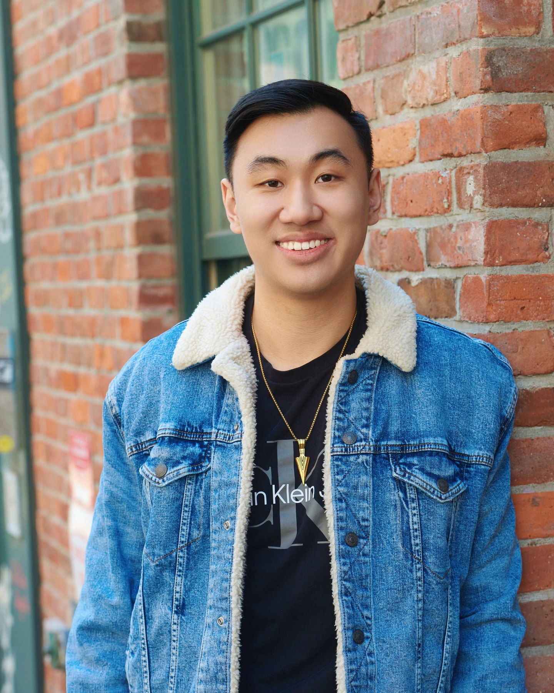

Education
Cornell University
B.S. in Computer Science

I build open-source AI and Kubernetes infrastructure, turning complex distributed systems into usable tools.

I’m a software engineer building open-source AI, Kubernetes, and cloud infrastructure. I enjoy turning complex systems into reliable tools that are easier for people to use.
Education
B.S. in Computer Science
Based in
Originally from
Microsoft software engineering across open-source AI, Kubernetes, and Azure, followed by previous roles in cloud infrastructure and machine learning.
Current role —Present
MicrosoftOpen source · AI · Kubernetes · Azure
I work on open source projects in AI and the Kubernetes ecosystem. My focus is on project design, implementing new features, cross-company launches, project governance, and contributor experience. I bring the changes from upstream into production environments on Azure.
I use my expertise in open source project governance and Kubernetes development to cutting edge AI projects.
I build and maintain projects across several Kubernetes SIGs, focusing on test reliability, API evolution, governance, and contributor pathways.
Deliver major features and refactors, publish releases, keep end-to-end tests reliable, review contributions, onboard contributors, and host community office hours.
Introduced declarative Helm add-on orchestration and grew the project into an official Kubernetes SIGs repository.
clusterctl reviewer
Authored the add-on orchestration proposal and implemented MachinePool Machines across core CAPI and CAPZ.
Built an interactive resource-tree UI for debugging Cluster API clusters; reached 65K downloads and added v1beta2 conditions support.
I connect public Kubernetes projects with Microsoft’s build, validation, artifact, and fleet-management systems so upstream development can be consumed through repeatable production paths.
Built a pipeline that produces CAPI and CAPZ controller images, validates them with end-to-end tests, and publishes tested artifacts to Microsoft Artifact Registry for downstream teams and customers.
Integrated Cluster API with GitOps workflows to install cluster components and support a fleet of more than 50 clusters, including web UI support.
Cloud networking, storage systems, and applied machine learning shaped the systems perspective behind my work today.
KubernetesPolicy change → Envoy xDSLive proxy update
Two peer-reviewed papers grew from the Clemson research program, connecting language, security, and machine learning.
X. Zhang, J. Tong, N. Vishwamitra, E. Whittaker, J. P. Mazer, R. Kowalski, H. Hu, F. Luo, J. Macbeth, and E. Dillon.
15th IEEE International Conference on Machine Learning and Applications, pp. 740–745.N. Vishwamitra, X. Zhang, J. Tong, H. Hu, F. Luo, R. Kowalski, and J. Mazer.
3rd ACM International Workshop on Security and Privacy Analytics, pp. 37–42.A concise inventory of systems, languages, and methods spanning infrastructure, tooling, and research.
For engineering conversations, open-source collaboration, or research connections, pick a favorite and say hello.